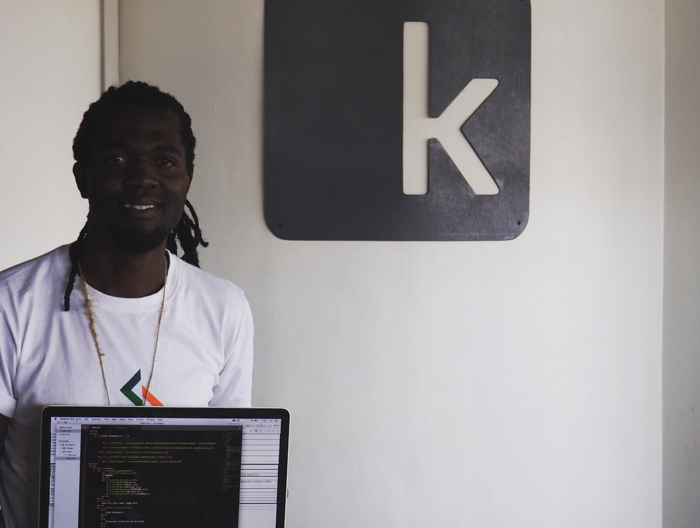
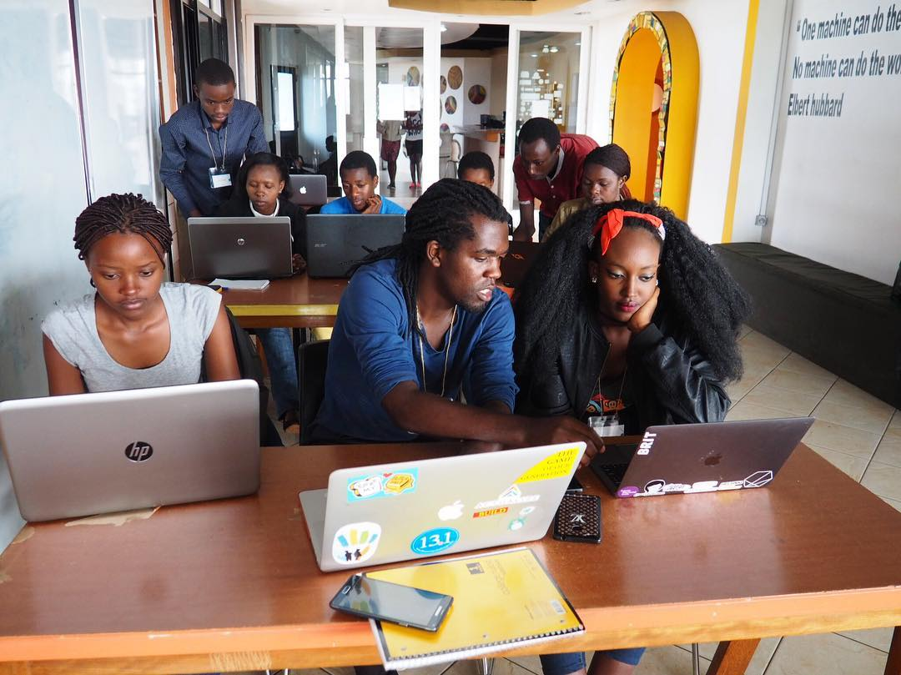
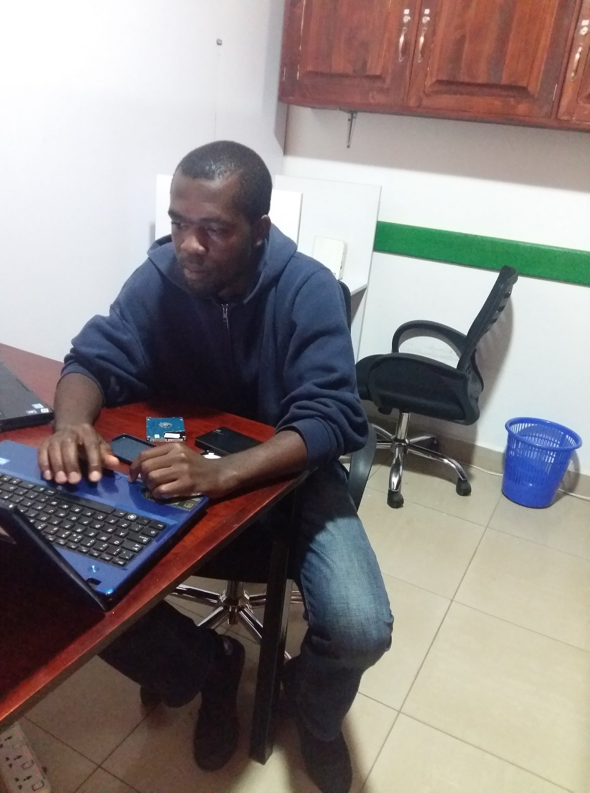
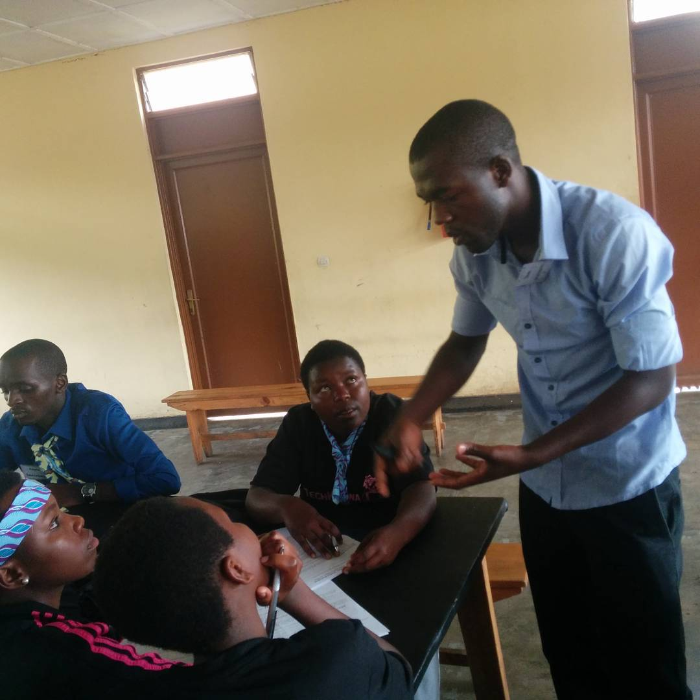
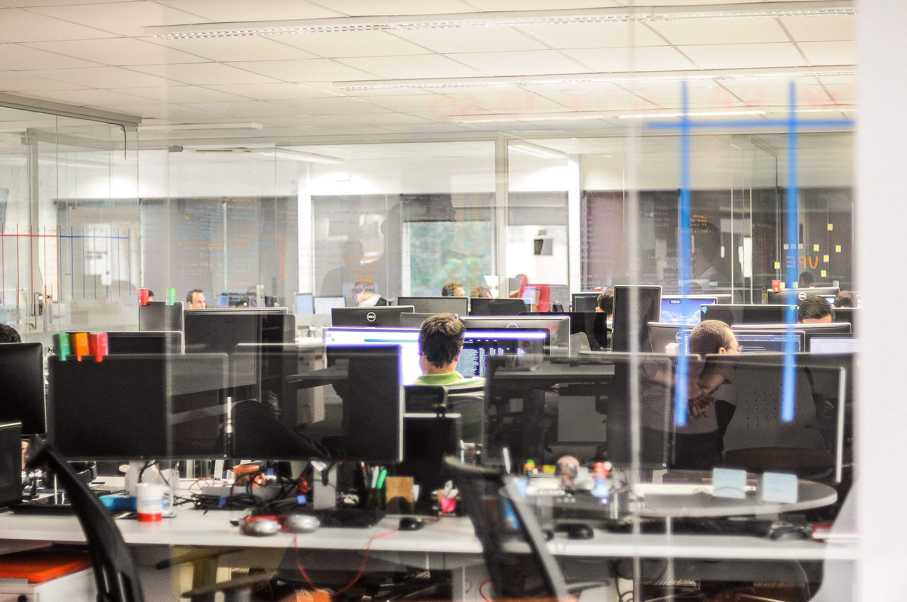

-
Web Design
 -
Network Suport

-
Team working
 -
Fixing Computers
 -
Training
 -
Technical Support

Simon Pierre Niwemugizi is my full name, but you can just call me Simon. I am currently living in Kigali, Rwanda. I have a passion for travel, fitness, food and love meeting new people. I am a die-hard fanatic football fan and cheer for Real Madrid.
You heard it right…CODING! I have always had a desire to learn how to build and design websites and now have a new favorite hobby.
To my surprise, coding is currently an in-demand skill and rewarding career path. I am currently building a portfolio of my work including this website. I intend to expand my knowledge and expertise in website development and become a full-stack web developer.
I am a strong believer that nothing is impossible if you have a willing heart. My journey in web development has just begun, stay tuned for updates and new projects.
I have worked on many project in my career. I have picked a few for you to have an insight of my skills and experiences